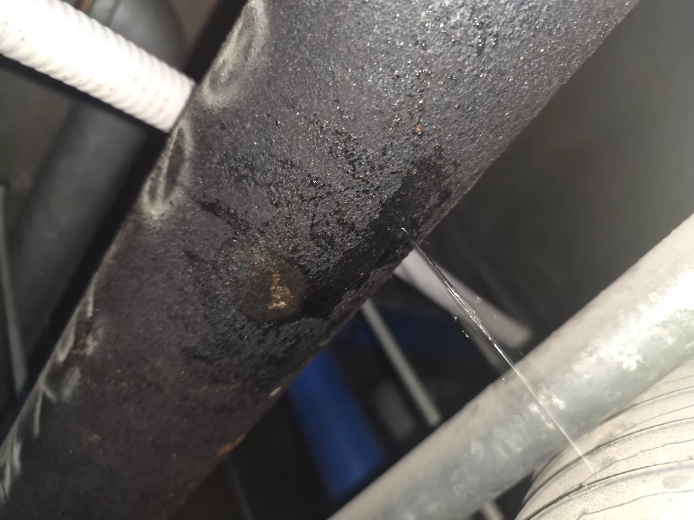
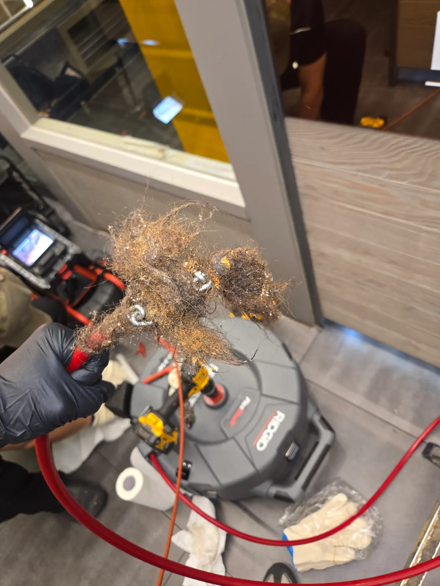

구로구 하수구막힘·하수구뚫는업체, 싱크대 배수와 누수까지 확인
싱크대 하부 배관의 기름때를 정리한 후 정상 통수와 누수 없는 상태까지 확인해 마무리했습니다.
서울 · 구로구
신라건축설비가 구로구에서 직접 진단하고 해결한 실제 작업 기록입니다.
싱크대 하부 배관의 기름때를 정리한 후 정상 통수와 누수 없는 상태까지 확인해 마무리했습니다.

샤프트로 횡주관 기름때를 제거한 뒤 물을 흘려 입상관 방향으로 배출하고 배수 흐름을 확인했습니다.

내시경으로 기름때가 쌓인 구간을 확인한 뒤 샤프트를 적용하고 배출 작업까지 이어간 사례입니다.

초입부 석션 후 내시경으로 횡주관 전반의 기름때를 확인하고 작업 범위를 정한 구로구 현장입니다.

역류와 하부 냄새로 방문해 초입부 석션, 내시경 검사, 횡주관 샤프트 작업 후 정상 통수를 확인했습니다.
구로구 가산동 변기막힘 꽉 막힌 변기를 탈거해 물티슈와 변이 섞인 이물질을 제거하고 석션과 에어건 작업 뒤 통수 확인 및 백시멘트 마감까지

구로구 구로동 배관공사 빌딩 천장 배관의 누수 지점을 확인하고 손상부에 보강재와 고정 밴드를 체결해 누수 차단

구로구 구로동 하수구막힘 오피스텔 공용 하수관에 PC방 천장 배관으로 접근해 샤프트로 엉킨 이물질 제거